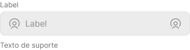
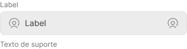
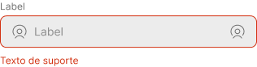
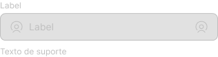

GESC: Gestão eficiente de serviços de campo
Coletando informações de forma prática e inteligente
Para que um serviço de fornecimento de gás não ofereça risco aos clientes, é crítico que os equipamentos estejam sempre operando dentro das normas técnicas de segurança. Para isso, a Comgás atende diariamente milhares de ocorrências de manutenção e emergência no estado de São Paulo.
O GESC foi desenvolvido para facilitar o trabalho de centenas técnicos na desafiadora tarefa de registrar as informações dos equipamentos e procedimentos, bem como a coleta de evidências fotográficas para a documentação dos serviços realizados durante os chamados.

Meus papéis
Como atuei nesse projeto
- UX Designer
- UI Designer
- Interaction Designer
- Content Designer
Duração
10 meses
Entregáveis
- Protótipos interativos
- Shadowing e entrevistas
- Persona
- Casos de uso, jornadas de usuário e fluxos de tarefas
- Mapa de navegação
- Protótipos em alta e em baixa fidelidade
- Design system/UI kit
- Testes de usabilidade e descobertas
Ferramentas
- Figma
- Miro
- Illustrator
- Photoshop
Meu impacto
Para este projeto validei a necessidade apresentada pelo cliente, que inicialmente era o desenho de uma interface seguindo uma experiência pré-estabelecida. Através do entendimento do contexto e de uma extensa pesquisa, percebi que a solução não tinha o usuário no centro. Descobri diversas dores e necessidades, além de oportunidades que trariam valor para o negócio.
Sobre o cliente
A Comgás é a maior distribuidora de gás natural encanado da América Latina. Diariamente, quase 700 chamados são atendidos por aproximadamente 250 técnicos, realizando manutenções em instalações de gás residenciais, comerciais e industriais e atendendo mais de 2,5 milhões de clientes, que recebem gás encanado por meio de 21 mil km de gasodutos espalhados em mais de 95 municípios do Estado de São Paulo.
User statement (ou problema inicial)
*Caso você não tenha tempo, ou se achar o texto muito longo, basta ler os trechos em negrito para um entendimento rápido.
Sempre parto de uma declaração do problema inicial do meu usuário alvo, definindo quem ele é e qual a sua necessidade , e realizo uma pesquisa para validar se esse é o problema/necessidade real, ou não, e então preencho o restante dessa declaração após ter um aprofundamento no contexto.
Eu sou um técnico de manutenção de sistemas de distribuição da Comgás
E eu preciso registrar informações e coletar evidências das manutenções realizados em cada ocorrência
Mas ...
Por que ...
O que faz com que eu me sinta …
Pesquisa: O que precisei entender, e o que descobri
Primeiro, conversei com diversos stakeholders que tinham contato e entendimento do que envolvia resolver chamados em campo para conhecer um pouco da rotina dos técnicos.
Todas as manhãs o técnico recebe em seu smartphone, através da central de atendimento ao cliente, as OS (ordens de serviço) do dia. Ele organiza um roteiro de deslocamento levando em consideração os horários de atendimento e o endereço de cada chamado. Cada OS contém o detalhamento do serviço a ser realizado, o endereço e o prazo para chegar ao local de atendimento.
Após dirigir sua viatura até o local e realizar os procedimentos necessários, o técnico deve fazer o upload de fotos e preencher diversos formulários em diferentes aplicativos para encerrar o chamado e então se deslocar para o próximo endereço.
Com essas informações iniciais, precisei conhecer mais a fundo o dia-a-dia dos técnicos, buscar detalhes do atendimento, como se dava o preenchimento das OS e os problemas e aprendizados que só se apresentariam observando o processo do ponto de vista deles, conseguindo assim enxergar o que as conversas anteriores não haviam evidenciado.
Por que criar uma nova solução de preenchimento de OS?
O preenchimento ocorre durante, após o serviço, ou ambos?
Quais requisitos não são atendidos pelos aplicativos já utilizados?
Quais são os principais problemas de experiência e usabilidade?
Shadowing: Indo a campo e empatizando
Participei durante três dias como espectador de diversos atendimentos de chamados, ao lado de diferentes técnicos, observando e fazendo perguntas sobre os processos e sobre os preenchimentos, além de entrevistas em profundidade com 12 técnicos e uma pesquisa quantitativa com 40 técnicos.
Descobertas e dores
Inicialmente, a necessidade era reunir em uma única solução, todos os formulários e funcionalidades que estavam espalhados em 5 aplicativos. Após conhecer melhor o fluxo de trabalho e o trabalho dos técnicos, percebi que o problema ia além de ter uma solução única, e que várias outras questões levavam a perda na eficiência e produtividade.
Principais Ocorrências
Obstáculos comuns
Problemas com os APPs
Persona - Davi
38 anos. Técnico da Comgás há 7 anos, casado e com dois filhos.
“O meu foco deveria estar em resolver os chamados para os clientes, mas acabo gastando mais energia para preencher as OS.”
Davi entrou na Comgás quando os relatórios ainda eram preenchidos a mão. Viu a transição da coleta de dados do papel para o digital com entusiasmo, porém com o tempo os gaps na experiência acabaram dificultando o seu trabalho.
Personalidade
Tecnologia

Sente e pensa
- Frustado e inseguro quando precisa preencher uma OS
- Desmotivado e impaciente por ter que sempre repetir o mesmo trabalho duas vezes
- O sistema na realidade mais atrapalha do que ajuda
Fala e faz
- Precisa se prevenir e agir esperando por erros
- Não segue os protocolos para conseguir eficiência
- O modo de roteirização é ineficiente
Vê
- O backoffice desorganizado
- Líderes não conseguem ajudar
- OS chegando incorretas e/ou incompletas
Ouve
- Que o sistema não presta
- Que precisam finalizar as OS após o atendimento sem perder muio tempo
Dores
- Preenchimento burocrático
- Dificuldade em utilizar os apps
- Trabalho muito longo
- Desmotivação
- Tempo gasto no deslocamento
Ganhos
- Economia de tempo
- Trabalhar de forma mais eficiente
- Sentir-se motivado novamente
Os aplicativos não refletem o cenário do mundo real, exigindo anotações separadas e esforço dobrado. A interface dos aplicativos também é pouco intuitiva: os formulários são cansativos, e não fornecem visibilidade de progresso. A logística não é organizada a partir da localização em tempo real dos técnicos, o que gera longos deslocamentos.
User statement - o problema real
Todo o processo de pesquisa me ajudou a ter uma visão mais clara das necessidades e oportunidades, e a enxergar qual é o problema real a ser abordado. Com as informações que coletei, consigo atualizar e completar a declaração do usuário. Neste caso, dois problemas críticos foram escolhidos para serem resolvidos:
Eu sou um técnico de manutenção de sistemas de distribuição da Comgás
E eu preciso coletar informações sobre os serviços e manutenções realizados
Mas perco muito tempo no preenchimento das OS, que é lento e burocrático
Porque para registrar as informações preciso interagir com 5 aplicativos diferentes, com interfaces complicadas e pouco intuitivas
O que faz com que eu me sinta frustrado e desmotivado por não conseguir realizar meu trabalho de forma eficiente e bater as metas
Eu sou um técnico de manutenção de sistemas de distribuição da Comgás
E eu preciso me deslocar rapidamente até os locais de atendimento
Mas perco muito tempo no trânsito, dirigindo entre os endereços de atendimento
Porque os locais de atendimento são muito distantes, e a distribuição de OS não é planejada de forma eficiente
O que faz com que eu me sinta frustrado e desmotivado por não conseguir realizar meu trabalho de forma eficiente e bater as metas
Como podemos criar um aplicativo que permita aos técnicos dedicar tempo à tarefa principal, que é o serviço a ser prestado, ao ajudá-los na organização do seu dia de trabalho e no preenchimento das OS, de maneira simples e intuitiva?
Cenário de uso
O próximo passo foi colocar a persona em uma situação específica em que ela possa utilizar o produto. O caso de uso principal foi inspirado na síntese de todo conhecimento que obtive até aqui: conversas com stakeholders, entrevistas e entendimento das limitações das ferramentas utilizadas.
O MVP deve permitir que o usuário atenda um chamado de desligamento de gás, coletando todas as informações e evidências, e que permita que o cliente assine a OS ao final. Além disso, deve ser de rápido preenchimento, trazendo praticidade e economia de tempo.
Épico
Como usuário do GESC, eu preciso acessar a plataforma para atender as OS.Estórias de usuário
Como usuário do GESC, eu preciso saber qual a OS mais próxima da minha localização. Como usuário do GESC, eu preciso preencher todas as informações da OS para encerrar o chamado. Como usuário do GESC, eu preciso coletar evidências fotográficas, e também a assinatura do cliente.Critérios de aceitação
Garantir que o usuário do GESC consiga:- Completar o onboarding
- Saber qual a próxima OS a ser atendida
- Acessar a OS para visualizar os formulários
- Preencher os formulários em qualquer ordem
- Ter visibilidade do progresso de preenchimento
- Coletar a assinatura do cliente
1. Nova OS - Gatilho
Davi está em sua viatura pronto para iniciar os atendimentos, quando recebe no aplicativo uma nova OS de desligamento de gás em uma residência.
2. Entendendo o percurso
Ele aceita a OS, verifica a distância e tempo de deslocamento, então parte para o endereço descrito.
3. Preenchendo a OS
Durante o serviço ele vai coletando informações e preenchendo os formulários, e ao final do chamado, ele preenche as informações restantes e coleta a assinatura do cliente, encerrando a OS.
4. Próximo atendimento
Enquanto Davi realizava o serviço, o sistema calculou o horário estimado que ele deveria finalizar aquele chamado, e com base na sua localização designou outra OS para ele. Davi aceita a nova OS e inicia um novo atendimento.
Ideação
Com meu objetivo claro comecei a pensar nas funcionalidades. O aplicativo precisa ser fácil de usar durante o atendimento de um chamado. Seja para preencher informações ou tirar fotos - é necessário fácil acesso aos formulários com interações intuitivas que não façam o usuário pensar para preencher. A etapa de pesquisa me forneceu informações suficientes para determinar quais recursos trarão mais ou menos valor para o usuário, e contei com a ajuda do time de tecnologia para entender quais delas terão maior ou menor impacto no desenvolvimento.
Valor
- Permitir que o usuário escolha o que, e quando preencher
- Separar os formulários por assunto
- Barra de progresso indicando o que já foi preenchido, e o que falta
- Dar visibilidade de campos preenchidos incorretamente/incompletos
- Sistema de distribuição de OS inteligente e por demanda (drip feed), levando em consideração a localização de cada técnico, e o tempo estimado para conclusão de cada tipo de chamado
- Integração com o Waze para deslocamento até o local de atendimento
- Notificar cliente via SMS/e-mail quando o técnico estiver se deslocando para realizar o atendimentoa
- Máscaras e validações nos campos
- Educar o usuário com dicas e exemplos de preenchimento
- Permitir que o usuário interrompa temporariamente o recebimento de OS
- Integração/parceria com redes de estacionamento para facilitar a chegada ao local de atendimentoo
Task flows
Após definir quais seriam as funcionalidades do aplicativo, criei fluxo para as tarefas principais.Fluxo do usuário
Inicia o aplicativo para receber OS e atender chamados. Este fluxo pressupõe que o usuário esteja usando o aplicativo pela primeira vez.Mapa de navegação
A partir dos fluxos de tarefas e das funcionalidades, criei um simples mapa de navegação que fosse funcional e fácil de navegar.Protótipos: Testar e errar rápido
Wireframe
A primeira versão do wireframe me permitiu explorar padrões de design comuns entre aplicativos já conhecidos, ajudando-me a determinar o que traria familiaridade durante a interação dos usuários com o GESC. Também realizei testes iniciais de usabilidade para entender melhor como os usuários esperavam concluir as tarefas nas quais eu estava focado e descobrir as revisões prioritárias que precisam ser implementadas, diminuindo o número de iterações e focando os esforços na criação da interface em alta fidelidade.
UI Kit
Desenvolvi um UI Kit com base no Google Material Design, trazendo atributos visuais da marca da Comgás.Cores
Sinalização
Tons de Cinza
Componentização
Botões primários
Botões secundários


Botões de texto
Campo de texto habilitado
Campo de texto selecionado
Campo de texto com erro
Campo de texto desabilitado
Protótipo em alta fidelidade e testes de usabilidade
ver protótipo completoResultados dos testes
Testei a primeira versão do protótipo com 5 usuários para determinar as revisões necessárias para tornar a experiência geral mais intuitiva e agradável. Alguns dados e resultados:
Iteração
Principais pontos de dor que foram abordados na iteração:
- Possibilitar que o usuário copie o endereço de atendimento para fazer a navegação através do aplicativo que preferir;
- Adicionar uma barra inferior de navegação, para que o usuário entenda o momento de conclusão do preenchimento de cada formulário;
- Correções de UX writing para adequar a comunicação à termos que os usuários estejam habituados.
O GESC no mundo real
Após a implementação do aplicativo em campo, pudemos coletar alguns dados interessantes a partir da utilização dos técnicos durante o atendimento:
Aprendizados e próximos passos
- A abordagem inicial era que o GESC unificasse ferramentas espalhadas por vários APPs para compor uma aplicação única, porém percebi que era necessário identificar e padronizar os diversos tipos de atendimentos que ele precisaria realizar, e adequar o GESC para atender e refletir a realidade do que ocorre durante um atendimento real em campo.
- Reduzir o trabalho e a carga mental do usuário é fundamental para que o sistema cumpra a sua função, mas é necessário garantir que o usuário ainda tenha autonomia para tomar decisões e realizar o preenchimento da forma que preferir.
- Por ser um público de nicho, é preciso que o sistema se comunique com o usuário de forma familiar, incorporando termos técnicos e “apelidos” a que já estejam acostumados.
O GESC pode oferecer uma experiência ainda melhor aos gasistas, e estas são algumas ideias que sugeri:
- Trazer o histórico recente de atendimentos prévios feitos a uma instalação, com campos pré-populados para agilizar ainda mais o preenchimento;
- Integração com customer support para de agendamento de visitas técnicas e avisos via SMS no dia de atendimento dando previsão de chegada do técnico no endereço;
voltar ao topo